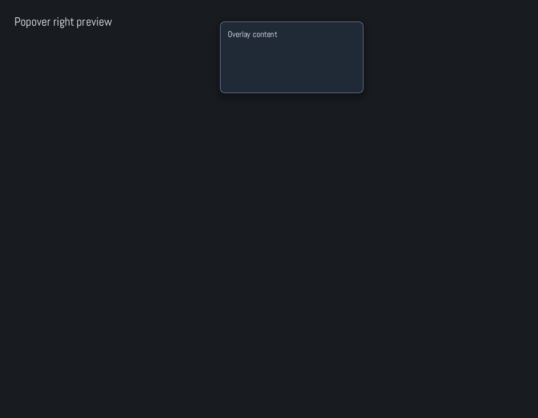
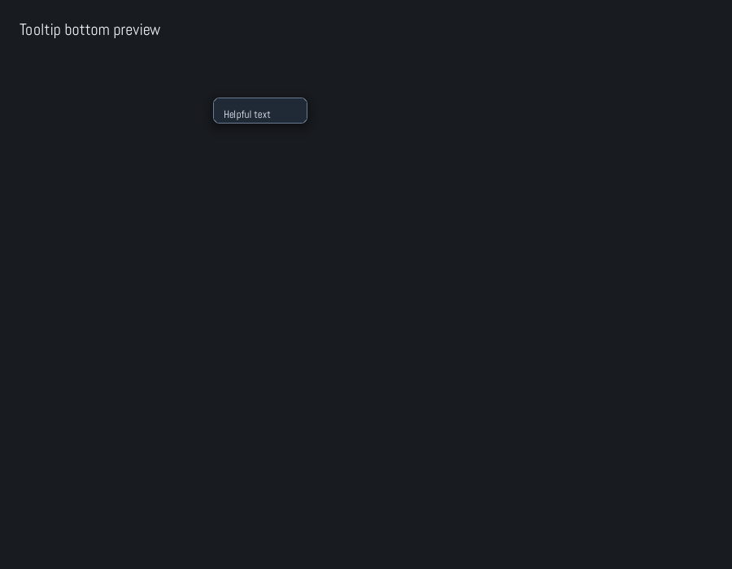
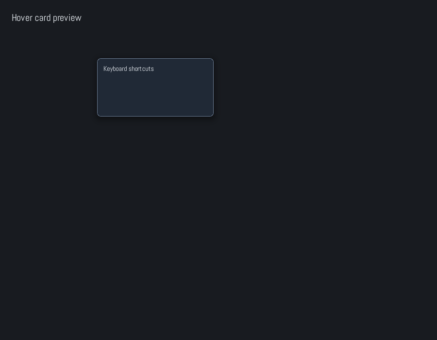
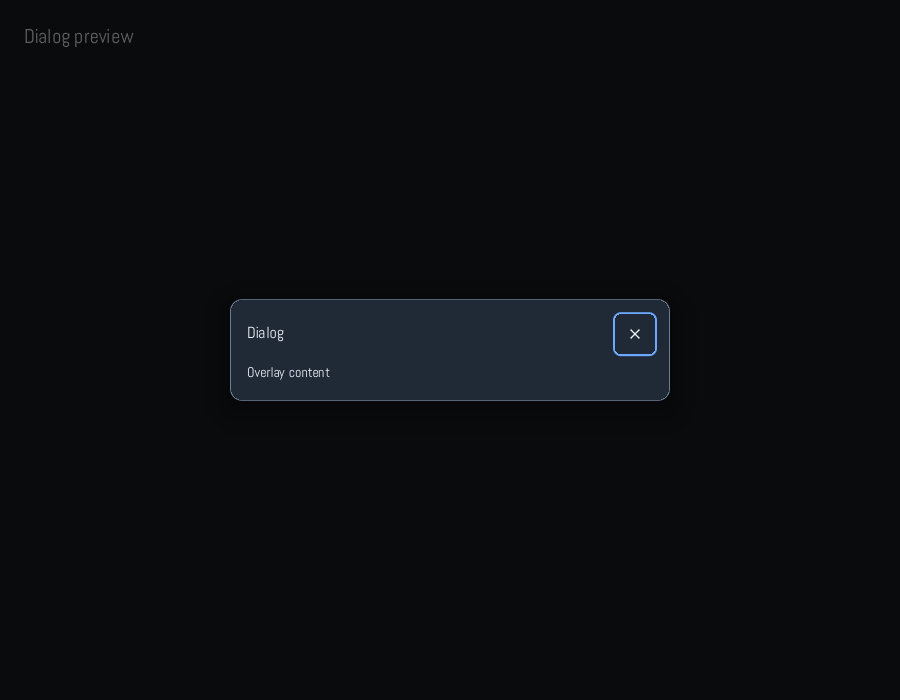
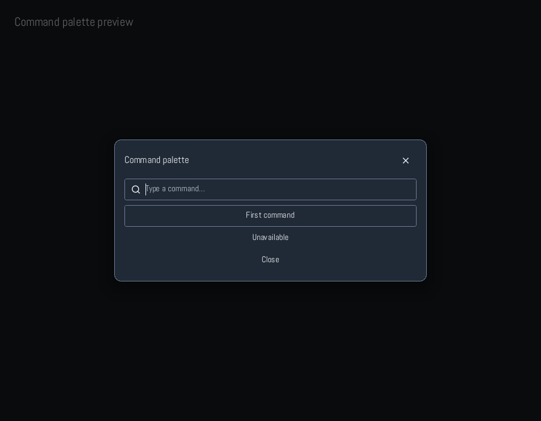

COMPONENT ATLAS 02 / 02
部品を知る。
画面が広がる。
Zaniah のオプション UI 層は require "zaniah/ui" で読み込みます。ボタンから仮想化されたデータ表示まで、どれも Ruby の要素ツリーに直接置けます。画像は Zaniah 自身で描画したものです。
RENDERED ATLAS
実際の描画を見る。
以下の画面は Zaniah のヘッドレスバックエンドで生成したものです。基礎部品からワークスペース、フォームまでを一枚で見渡せます。

{kind=link}
{kind=link}
01 / FOUNDATION & ACTIONS
小さな部品から。
ラベル、状態表示、操作ボタンは画面の語彙です。テーマの色とサイズを選び、必要なイベントだけを渡します。
require "zaniah/ui"
button = Zaniah::UI::Button.new("Save", variant: :primary)
.icon(:check).on_click { puts "Saved" }
badge = Zaniah::UI::Badge.new("Ready", variant: :success)
alert = Zaniah::UI::Alert.new("Saved", variant: :success)- Label · Icon
- 本文や見出し、意味を持つアイコン。
Iconは読み上げ用のlabel:を指定できます。 - Divider · Spacer · Card
- 領域の分割、余白、コンテンツのまとまりに使います。
- Badge · Kbd · Avatar
- 短い状態、ショートカット、人や対象の識別を表します。
- Alert · EmptyState · Skeleton
- 重要な通知、空の結果、読み込み中をそれぞれ明示します。
- Button · IconButton · ToggleButton
- 実行、アイコン操作、押下状態の切り替え。サイズと variant を選べます。
- ButtonGroup · ProgressBar · Spinner · Meter
- 関連操作の整列、進捗、処理中、値の範囲を示します。
02 / INPUT & CHOICE
入力を受け取る。
文字、数値、単一・複数選択、日付と時間。キーボードとフォーカス操作を備えた既成部品を選べます。
- TextField · TextArea · SearchInput
- 一行、複数行、検索。ラベル、ヒント、エラー、クリア操作を付けられます。
- PasswordInput · NumberInput · TagInput
- マスクされた文字列、範囲付き数値、複数タグの編集に対応します。
- Checkbox · Radio · RadioGroup · Switch
- 複数選択、一つだけの選択、オン・オフの状態を用途で使い分けます。
- Slider · RangeSlider
- 単一値または二つのつまみで範囲を調整します。
- Select · Combobox · MultiSelect
- 固定候補、検索できる候補、複数候補から選べます。
- DatePicker · Calendar · DateRangePicker
- 日付、月表示、開始・終了日の範囲を入力します。
- TimePicker · ColorPicker · SegmentedControl
- 時刻、色、少数の排他的な選択肢に向きます。
- Validation · FormField · Form
- 必須・形式などの検証と送信を組み合わせます。
選び方の目安： 選択肢が短く固定なら SegmentedControl、多いなら Select、検索が必要なら Combobox。日付範囲は DateRangePicker が開始と終了をまとめて扱います。
04 / DATA & VISUALIZATION
大きなデータも、見通しよく。
行・列・階層を扱うビューと、傾向を伝えるチャート。大量データ向けの仮想化も含まれます。
- Table · DataGrid
- レコードを列で表示。並べ替え、列幅変更、選択、編集、コピー・ペーストのフックがあります。
- Grid
- 行列を両方向に仮想化。固定行・列や範囲選択を使う表計算型ビューです。
- TreeView
- 階層を展開するビュー。遅延ロードした子要素の差し替えもできます。
- PropertyGrid
- 型付きの編集部品を使い、オブジェクトの属性を表形式で編集します。
- Sparkline · LineChart · AreaChart
- 小さな推移、折れ線、面の推移に使います。
- BarChart · StackedBarChart · PieChart · DonutChart · ScatterChart
- 比較、構成比、点の分布を用途に合わせて描き分けます。
05 / WORKSPACE & EDITORS
アプリの骨格まで。
分割レイアウト、ドッキング、編集領域。単純な画面から複数ペインの作業環境まで組み立てられます。
- SplitPane · PaneGrid · Resizable
- 二分割、複数ペイン、単独領域のリサイズを扱います。
- DockPanel · DockWorkspace
- 固定の五領域レイアウトと、タブを移動・分割できる作業領域です。
- ZoomPanView
- キャンバスを拡大縮小・パンする表示領域です。
- CodeEditor · RichText
- 軽量コード編集と、装飾・縦書き・インライン要素を含むリッチテキストです。
06 / OVERLAYS & FEEDBACK
必要な瞬間に現れる。
実際のヘッドレス描画から、オーバーレイの見え方を確認できます。モーダルはフォーカスを閉じ込め、Esc で閉じられます。








THE FULL REFERENCE
全 API とオプションを調べる。
この図鑑は用途の入口です。引数、variant、アクセシビリティ role、キーボード操作は コンポーネントリファレンス にまとめています。画像は tools/generate_component_gallery.rb で再生成できます。